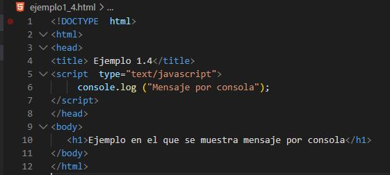
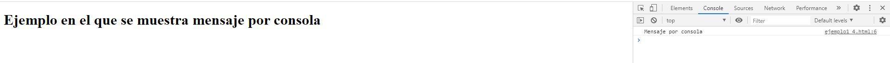
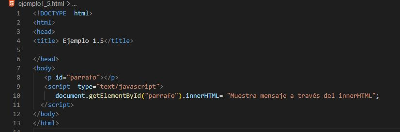
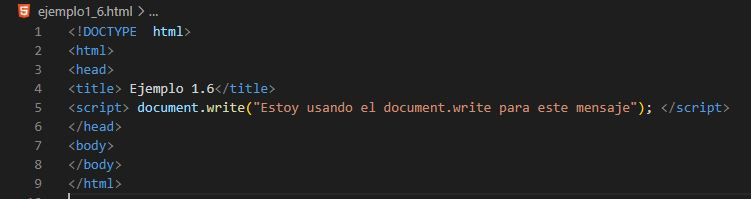
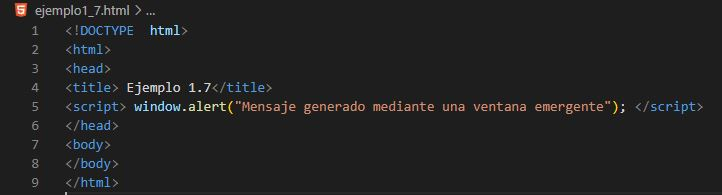

Existen varias opciones para que el código JavaScript se comunique con el usuario. A continuación se detallan cada una de ellas:
1.- En la consola del navegador

Esta opción es usada solo por los desarrolladores puesto que ningún usuario suele acceder a la consola para ver el contenido escrito en ella. Una vez que ejecutemos el código en el navegador, pulsamos F12 para acceder a la consola.

2.- En cualquier elemento HTML utilizando el atributo innerHTML

3.- Generando HTML con el método document.write()

4.- Generando un mensaje de alerta con el método window.alert()
